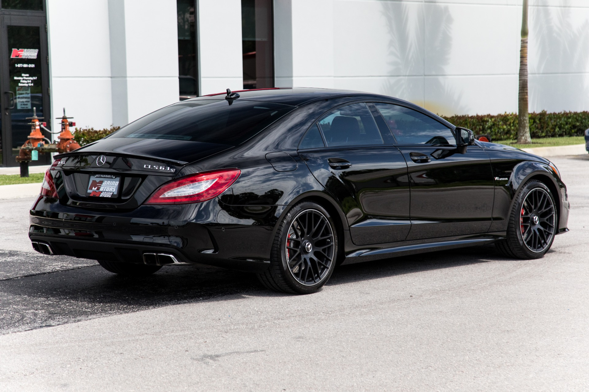

The Mercedes-Benz CLS (initially called the CLS-Class) is a series of executive cars produced by Mercedes-Benz from October 2004 to August 2023.The original model was a four-door sedan based on the Mercedes E-Class platform, marketed as a four door coupé.[1] An estate (shooting brake) model was later added to the model range with the second generation CLS.[2] All models are available as a high
 me imitom momwons mersedesi rom aris zalian magari da kompakturi mankana me mikvars zalian aris swrafi da zlieri mankana aseve aris gamzle chemi ocneba mkavdes es sauketeso mankana
me imitom momwons mersedesi rom aris zalian magari da kompakturi mankana me mikvars zalian aris swrafi da zlieri mankana aseve aris gamzle chemi ocneba mkavdes es sauketeso mankana